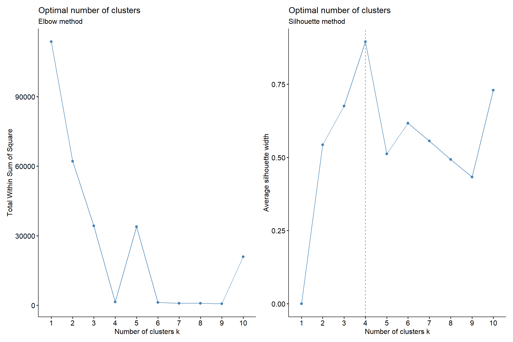
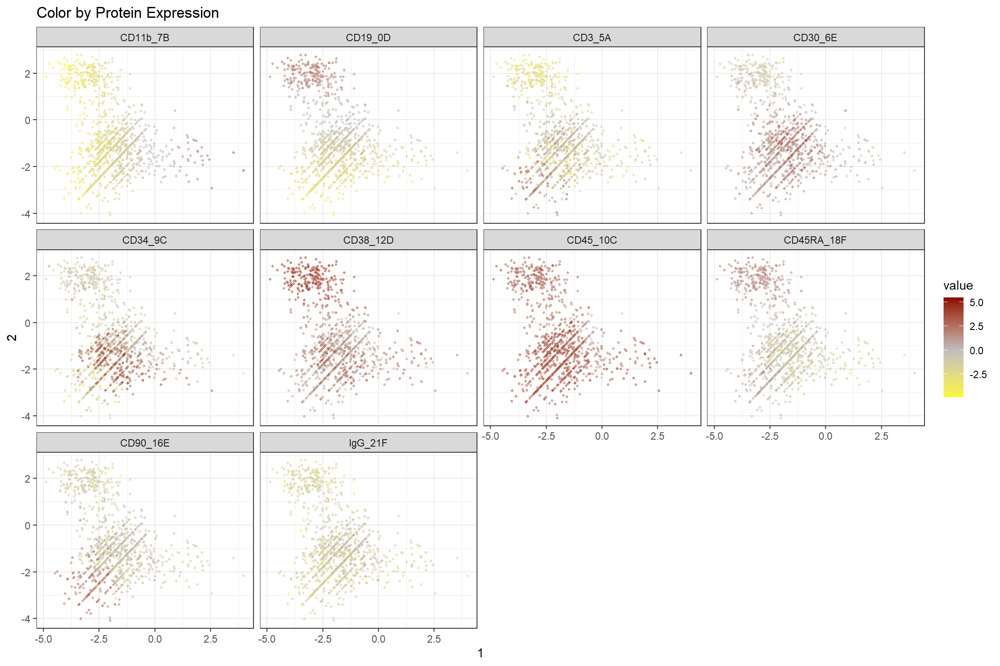
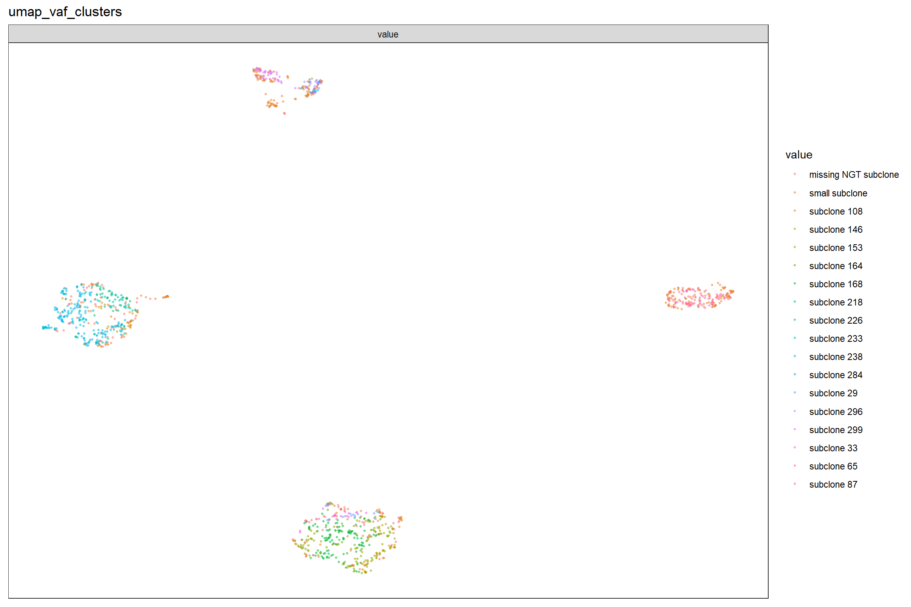
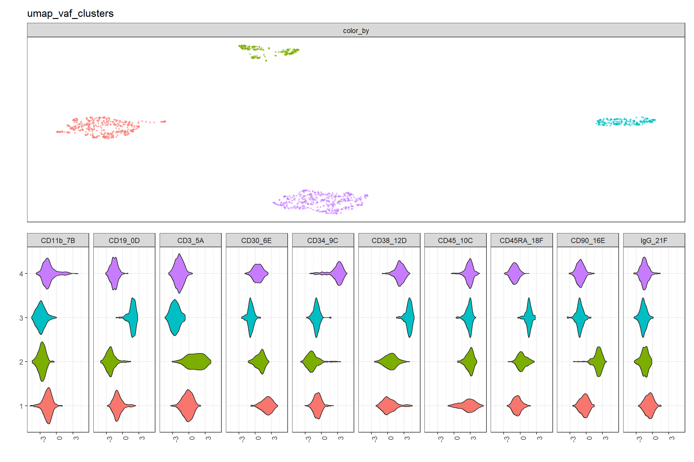
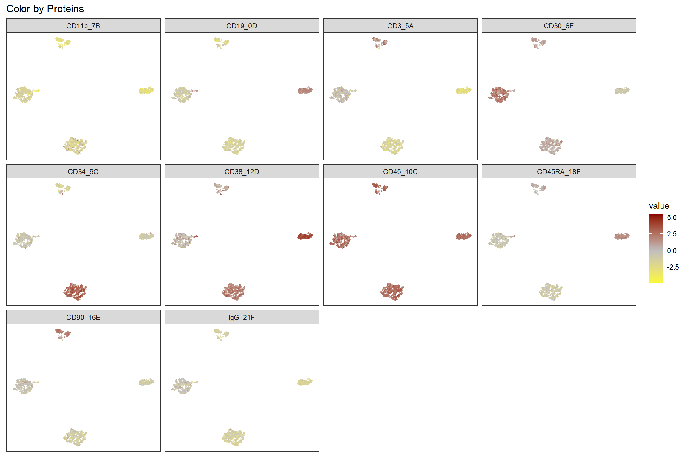
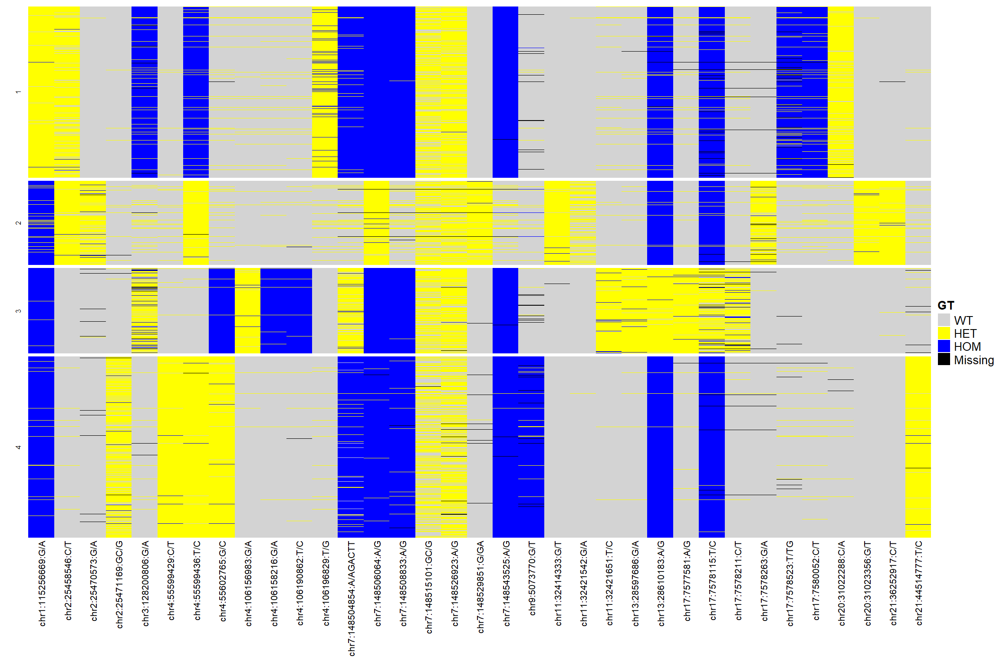
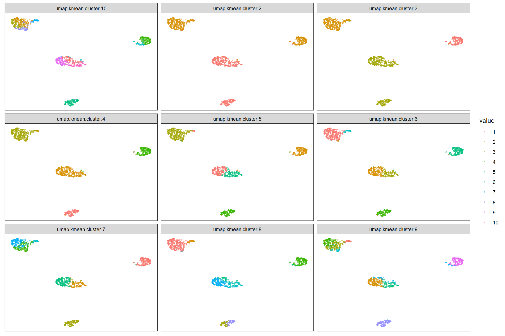
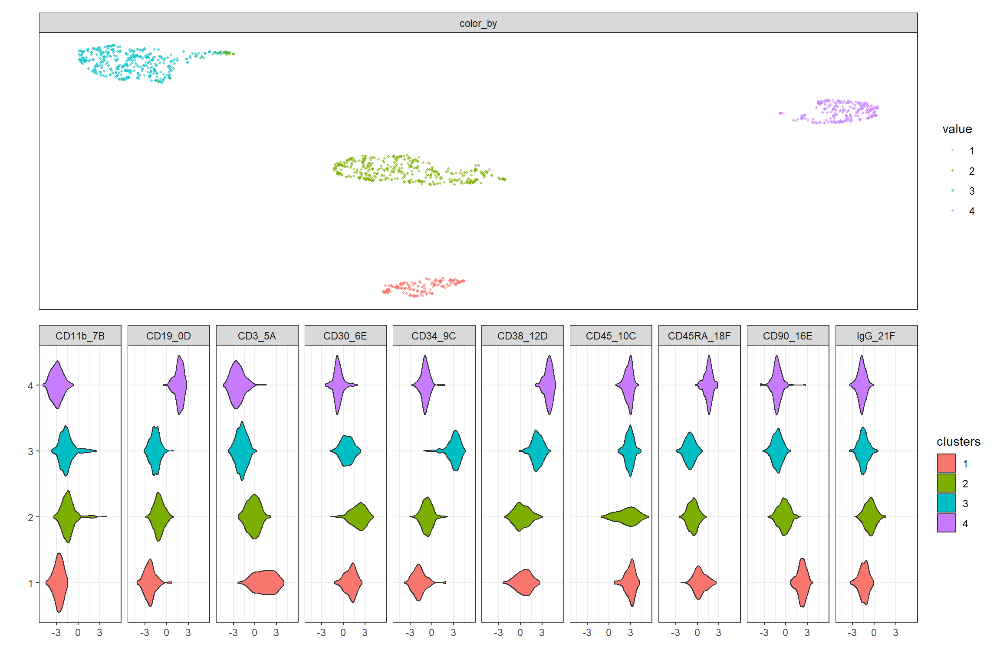

Multi-omics Analysis
multiomics_analysis.RmdLoad multiomics H5
Works for DNA, DNA + Protein data.
- Load Multi-omics data generated by Tapestri Pipeline
filename <- system.file("extdata", "ABseq021.h5", package = "TapestriR") experiment = read_tap(filename) experiment
## Experiment: ABseq021.h5
## Num Cells: 1205
## Formal class 'Tapestri_Assay' [package "TapestriR"] with 6 slots
## ..@ assay_name : chr "cnv"
## ..@ metadata :List of 1
## ..@ feature_annotations: tibble [138 × 1] (S3: tbl_df/tbl/data.frame)
## ..@ cell_annotations : tibble [1,205 × 3] (S3: tbl_df/tbl/data.frame)
## ..@ data_layers :List of 1
## ..@ analysis_layers : list()
## Formal class 'Tapestri_Assay' [package "TapestriR"] with 6 slots
## ..@ assay_name : chr "dna"
## ..@ metadata :List of 1
## ..@ feature_annotations: tibble [186 × 6] (S3: tbl_df/tbl/data.frame)
## ..@ cell_annotations : tibble [1,205 × 3] (S3: tbl_df/tbl/data.frame)
## ..@ data_layers :List of 5
## ..@ analysis_layers : list()
## Formal class 'Tapestri_Assay' [package "TapestriR"] with 6 slots
## ..@ assay_name : chr "protein"
## ..@ metadata :List of 1
## ..@ feature_annotations: tibble [10 × 1] (S3: tbl_df/tbl/data.frame)
## ..@ cell_annotations : tibble [1,205 × 3] (S3: tbl_df/tbl/data.frame)
## ..@ data_layers :List of 1
## ..@ analysis_layers : list()Filter variants
Best practice is to create a multiassay, multisample h5 in pipeline, and apply filters before loading into R. We’ve done some filtering here. notice the number of cells and features have changed after filtering.
# ideally would just start by loading filtered H5, but for now will load data with some basic filters filtered_variants = filter_variants(experiment$assays$dna) # add VAF layer into DNA assay vaf=round(filtered_variants$data_layers$AD/filtered_variants$data_layers$DP, 3) vaf[is.na(vaf)] <- 0 filtered_variants = add_data_layer(filtered_variants,'VAF',vaf) #add the filtered data back to experiment, this will subset the rest of the assays to make sure we have same cells experiment = add_assay(experiment,filtered_variants, keep_common_cells = TRUE) experiment
## Experiment: ABseq021.h5
## Num Cells: 1197
## Formal class 'Tapestri_Assay' [package "TapestriR"] with 6 slots
## ..@ assay_name : chr "cnv"
## ..@ metadata :List of 1
## ..@ feature_annotations: tibble [138 × 1] (S3: tbl_df/tbl/data.frame)
## ..@ cell_annotations : tibble [1,197 × 3] (S3: tbl_df/tbl/data.frame)
## ..@ data_layers :List of 1
## ..@ analysis_layers : list()
## Formal class 'Tapestri_Assay' [package "TapestriR"] with 6 slots
## ..@ assay_name : chr "dna"
## ..@ metadata :List of 1
## ..@ feature_annotations: tibble [49 × 6] (S3: tbl_df/tbl/data.frame)
## ..@ cell_annotations : tibble [1,197 × 3] (S3: tbl_df/tbl/data.frame)
## ..@ data_layers :List of 6
## ..@ analysis_layers : list()
## Formal class 'Tapestri_Assay' [package "TapestriR"] with 6 slots
## ..@ assay_name : chr "protein"
## ..@ metadata :List of 1
## ..@ feature_annotations: tibble [10 × 1] (S3: tbl_df/tbl/data.frame)
## ..@ cell_annotations : tibble [1,197 × 3] (S3: tbl_df/tbl/data.frame)
## ..@ data_layers :List of 1
## ..@ analysis_layers : list()Normalize read counts
- Load Protein assay and normalize
- Load DNA read counts
# normalize protein data using clr method protein_counts_norm = experiment$assays$protein$data_layers$read_counts %>% clr_by_feature() %>% as_tibble(rownames = NA) # add normalized data to protein assay experiment$assays$protein = add_data_layer(experiment$assays$protein,'normalized',protein_counts_norm) # normalize DNA read counts normalized_dna_reads = normalize_dna_reads(experiment$assays$cnv$data_layers$read_counts) experiment$assays$cnv = add_data_layer(experiment$assays$cnv,'normalized',normalized_dna_reads)
Explore data
X-Y plots
- select which proteins to plot on X and Y axis
- select set of other feature(s) to color the plot by. If you choose more then one feature, each feature will be plotted in a subplot
################## # select the Proteins to plot on X and Y ################## #protein_x = 'CD34' #protein_y = 'CD38' protein_x = 1 protein_y = 2 ################## # select 1 or more features to color by # color_by should be a vector of column header you want to color by ################## #all proteins color_by = experiment$assays$protein$data_layers$normalized #select a few proteins #color_by = experiment$assays$protein$data_layers$normalized %>% select('CD110','CD117') #select a few variant #color_by = experiment$assays$dna$data_layers$NGT %>% select(1:10) %>% mutate_all(as_factor) %>% mutate_all(recode_genotypes) p = tapestri_scatterplot(x = experiment$assays$protein$data_layers$normalized[[protein_x]], y= experiment$assays$protein$data_layers$normalized[[protein_y]], color_by = color_by)+ scale_colour_gradient2(low="yellow", mid='grey', high="darkred") p = p + xlab(protein_x) + ylab(protein_y) + ggtitle('Color by Protein Expression') p

#select a few variant color_by = experiment$assays$dna$data_layers$NGT %>% select(1:10) %>% mutate_all(as_factor) %>% mutate_all(recode_genotypes) p = tapestri_scatterplot(x = experiment$assays$protein$data_layers$normalized[[protein_x]], y= experiment$assays$protein$data_layers$normalized[[protein_y]], color_by = color_by) p = p + xlab(protein_x) + ylab(protein_y) + ggtitle('Color by Genotypes') p

SNV
Perform dimension reduction, clustering and visualization on genotype VAF data.
Testing out different projections. When to use which is open question.
data = experiment$assays$dna$data_layers$VAF projections = list() # umap_values <- umap(data, scale=TRUE, metric="euclidean", init="laplacian", pca=20) # projections[['Projection:umap_euclidean DR:pca data:vaf']] = tibble(x = umap_values[,1], y = umap_values[,2]) # # umap_values <- umap(data, scale=TRUE, metric="cosine", init="laplacian", pca=20) # projections[['Projection:umap_cosine DR:pca data:vaf']] = tibble(x = umap_values[,1], y = umap_values[,2]) # ### dimensional reduction using umap set.seed(111) umap_values <- umap(data, scale=TRUE, metric="manhattan", init="laplacian", pca=20) projections[['Projection:umap_manhattan DR:pca data:vaf']] = tibble(x = umap_values[,1], y = umap_values[,2]) experiment$assays$dna = add_analysis_layer(assay = experiment$assays$dna, layer_name = 'projections', as_tibble(projections))
Umap projection
#show a simple plot of the projection projection = experiment$assays$dna$analysis_layers$projections$`Projection:umap_manhattan DR:pca data:vaf` ggplot(data=projection) + geom_point(aes(x = x, y = y), alpha = 0.5, size=0.8)

Figure out how many clusters?
This is not a trival problem. Its left to user to explore the data. Here are a few examples on determining the number of clusters in your data.
cluster_on = experiment$assays$dna$analysis_layers$projections$`Projection:umap_manhattan DR:pca data:vaf` # Elbow method elbow = fviz_nbclust(cluster_on, kmeans, method = "wss") + labs(subtitle = "Elbow method") # Silhouette method silhouette = fviz_nbclust(cluster_on, kmeans, method = "silhouette")+ labs(subtitle = "Silhouette method") # Gap statistic # nboot = 50 to keep the function speedy. # recommended value: nboot= 500 for your analysis. # Use verbose = FALSE to hide computing progression. # set.seed(123) # gap_stat = fviz_nbclust(cluster_on, kmeans, nstart = 25, method = "gap_stat", nboot = 25)+ # labs(subtitle = "Gap statistic method") (elbow + silhouette) #/

#(gap_stat + plot_spacer())
Cluster on umap projection
clustering by kmeans and louvain on umap projection and raw features
### Hold all the different customer labels in a single structure cluster_by = experiment$assays$dna$analysis_layers$projections$`Projection:umap_manhattan DR:pca data:vaf` clusters = list() #### do the clustering for(i in 2:5) { kmean_values <- kmeans(cluster_by, i ,iter.max=500) clusters[[paste0('umap.kmean.cluster.',i)]] = as_factor(kmean_values$cluster) } graph_values <- buildSNNGraph(t(cluster_by), k=150) louvain_clust <- igraph::cluster_louvain(graph_values)$membership clusters[['umap.louvain.cluster']] = as_factor(louvain_clust) ############# ## Add cluster labels to analysis data structure ############# experiment$assays$dna = add_analysis_layer(assay = experiment$assays$dna, layer_name = 'umap_vaf_clusters', as_tibble(clusters))
Compare different clusters
plot all the different clusters on the same umap projection. change the x and y to use different projections
color_by = experiment$assays$dna$analysis_layers$umap_vaf_clusters projection = experiment$assays$dna$analysis_layers$projections$`Projection:umap_manhattan DR:pca data:vaf` p = tapestri_scatterplot( x = projection$x, y= projection$y, color_by = color_by) p = p + umap_theme() + ggtitle('umap_vaf_clusters') p

Color UMAP by genotypes
#%>% select(!contains('chr2:198267')) color_by = experiment$assays$dna$data_layers$NGT %>% select(1:20) %>% mutate_all(as_factor) %>% mutate_all(recode_genotypes) projection = experiment$assays$dna$analysis_layers$projections$`Projection:umap_manhattan DR:pca data:vaf` p = tapestri_scatterplot( x = projection$x, y= projection$y, color_by = color_by) p = p + umap_theme() p = p + ggtitle('Color by Genotypes') p

Violin plots
to do:
- name the clusters based on signature
- show heatmap of signature
color_by = experiment$assays$dna$analysis_layers$umap_vaf_clusters$umap.kmean.cluster.4 projection = experiment$assays$dna$analysis_layers$projections$`Projection:umap_manhattan DR:pca data:vaf` p = tapestri_scatterplot( x = projection$x, y= projection$y, color_by = color_by) p = p + umap_theme() + ggtitle('umap_vaf_clusters') + theme(legend.position = 'none') v = tapestri_violinplot(clusters = color_by, features = experiment$assays$protein$data_layers$normalized) v = v + theme_bw() + theme(legend.position = "none", axis.text.x = element_text(angle = 90, hjust = 1)) ## pathwork magic p / v

Color UMAP by Proteins
color_by = experiment$assays$protein$data_layers$normalized projection = experiment$assays$dna$analysis_layers$projections$`Projection:umap_manhattan DR:pca data:vaf` p = tapestri_scatterplot( x = projection$x, y= projection$y, color_by = color_by) p = p + umap_theme() + scale_colour_gradient2(low="yellow", mid='grey', high="darkred") p = p + ggtitle('Color by Proteins') p
Single assay heatmaps
To do
- provide a way to sort within each cluster
- what to do with multisample
- remove features that are not informative
- label analytes
Users should become familiar with ComplexHeatmap::Heatmap https://jokergoo.github.io/ComplexHeatmap-reference/book/ We’re only providing a simple example to get started.
#order features in chr order variant_order = experiment$assays$dna$feature_annotations %>% mutate(CHROM = as.numeric(CHROM), POS = as.numeric(POS)) %>% arrange(CHROM, POS) genotypes.mat = experiment$assays$dna@data_layers$NGT %>% select(variant_order$id) clusters = experiment$assays$dna@analysis_layers$umap_vaf_clusters$umap.kmean.cluster.4 snv.h <- ComplexHeatmap::Heatmap( as.matrix(genotypes.mat), name = "GT", col = c("lightgrey", "yellow", "blue", "black"), #circlize::colorRamp2(c(0, 1, 2, 3), c("grey", "yellow", "blue", "black")) heatmap_legend_param = list(labels = c("WT", "HET", "HOM", "Missing")), split = factor(clusters), cluster_rows = FALSE, show_row_names = FALSE, cluster_columns = FALSE, row_title_gp = grid::gpar(fontsize = 6), column_names_gp = grid::gpar(fontsize = 8), show_column_dend = FALSE ) snv.h

Protein
Cluster by Proteins
clustering by kmeans and louvain on umap projection and raw features
#dimensional reduction using umap set.seed(111) umap_values <- umap(experiment$assays$protein$data_layers$normalized, scale=TRUE, metric="manhattan", init="laplacian", pca=20) umap_layer = tibble( x = umap_values[,1], y = umap_values[,2] ) experiment$assays$protein = add_analysis_layer(assay = experiment$assays$protein, layer_name = 'umap', umap_layer) # Hold all the different customer labels in a single structure cluster_by = experiment$assays$protein$analysis_layers$umap clusters = list() #### do the clustering for(i in 2:5) { kmean_values <- kmeans(cluster_by, i ,iter.max=500) clusters[[paste0('umap.kmean.cluster.',i)]] = as_factor(kmean_values$cluster) } graph_values <- buildSNNGraph(t(cluster_by), k=150) louvain_clust <- igraph::cluster_louvain(graph_values)$membership clusters[['umap.louvain.cluster']] = as_factor(louvain_clust) ## Add cluster labels to analysis data structure experiment$assays$protein = add_analysis_layer(assay = experiment$assays$protein, layer_name = 'clusters', as_tibble(clusters))
plot UMAP and Clusters
plot all the different clusters on the same umap projection
p = tapestri_scatterplot( x = experiment$assays$protein$analysis_layers$umap$x, y= experiment$assays$protein$analysis_layers$umap$y, color_by = experiment$assays$protein$analysis_layers$clusters) p = p + xlab('') + ylab('') p = p + umap_theme() p

violin plots
to do:
- name the clusters based on signature
- show heatmap of signature
p_umap = tapestri_scatterplot( x = experiment$assays$protein$analysis_layers$umap$x, y= experiment$assays$protein$analysis_layers$umap$y, color_by = experiment$assays$protein$analysis_layers$clusters$umap.louvain.cluster) + xlab('') + ylab('') + umap_theme() p_violin = tapestri_violinplot( clusters = experiment$assays$protein$analysis_layers$clusters$umap.louvain.cluster, features = experiment$assays$protein$data_layers$normalized) p_umap / p_violin

Color UMAP by features
p = tapestri_scatterplot( x = experiment$assays$protein$analysis_layers$umap$x, y= experiment$assays$protein$analysis_layers$umap$y, color_by = experiment$assays$protein$data_layers$normalized) p = p + umap_theme() + scale_colour_gradient2(low="yellow", mid='grey', high="darkred") p
 ### Single assay heatmaps
To do
- provide a way to sort within each cluster
- what to do with multisample
- remove features that are not informative
- label analytes
Users should become familiar with ComplexHeatmap::Heatmap https://jokergoo.github.io/ComplexHeatmap-reference/book/ We’re only providing a simple example to get started.
#order features in chr order protein.mat = experiment$assays$protein$data_layers$normalized clusters = experiment$assays$dna@analysis_layers$umap_vaf_clusters$umap.kmean.cluster.4 protein.h <- ComplexHeatmap::Heatmap( as.matrix(protein.mat), name = "Protein", cluster_rows = FALSE, cluster_columns = FALSE, col = circlize::colorRamp2(c(-2, 0, 2), c("yellow", "grey", "blue")), split = factor(clusters), show_row_names = FALSE, row_title_gp = grid::gpar(fontsize = 6), #heatmap_legend_param=legend_params, column_names_gp = grid::gpar(fontsize = 8), show_column_dend = FALSE ) protein.h

CNV
Calculate Ploidy
Usage:
- select a cluster that you think is normal population.
- normalize read counts based on this normal population.
- plot as heatmap to review
#pick a clustering methods that best represents your data and identify the normal cluster # normalize all the read counts based on the normal cluster cnv.mat = compute_ploidy( reads = experiment$assays$cnv$data_layers$normalized, clusters = experiment$assays$dna$analysis_layers$umap_vaf_clusters$umap.kmean.cluster.4, baseline_cluster = 1 ) experiment$assays$cnv <- add_analysis_layer(assay = experiment$assays$cnv,layer_name = 'norm_to_baseline',data = cnv.mat)
heatmap
cnv.mat = as.matrix(experiment$assays$cnv$analysis_layers$norm_to_baseline) cnv.mat[is.na(cnv.mat) | is.infinite(cnv.mat)] <-2 clusters = experiment$assays$dna@analysis_layers$umap_vaf_clusters$umap.kmean.cluster.4 cnv.h <- ComplexHeatmap::Heatmap( as.matrix(cnv.mat), name = "CNV", col = circlize::colorRamp2(c(0, 2, 4), c("yellow", "grey", "blue")), split=factor(clusters), cluster_rows = FALSE, show_row_names=FALSE, cluster_columns = FALSE, row_title_gp = grid::gpar(fontsize = 6), column_names_gp = grid::gpar(fontsize=8), show_column_dend=FALSE) cnv.h
Ploidy Line plot
p = tapestri_ploidy_plot( normalized_reads = experiment$assays$cnv$analysis_layers$norm_to_baseline, clusters = experiment$assays$dna$analysis_layers$umap_vaf_clusters$umap.kmean.cluster.4 ) p